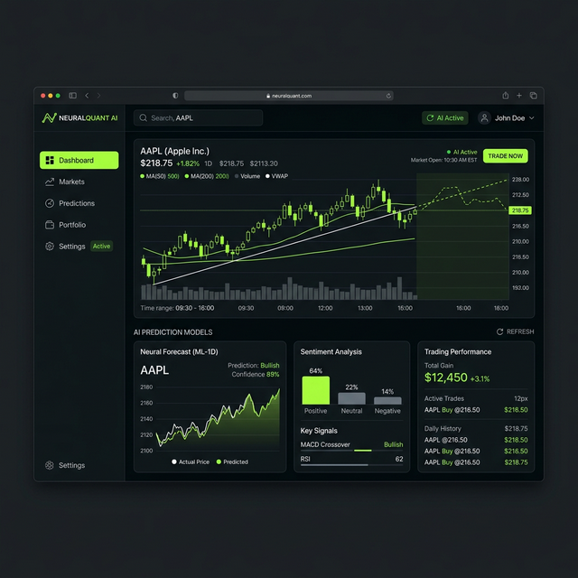
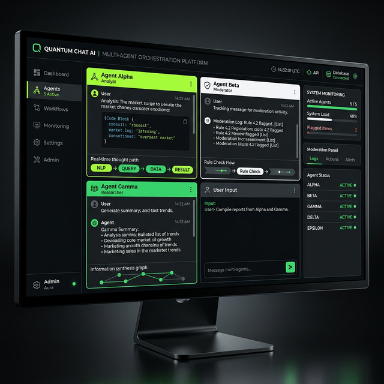
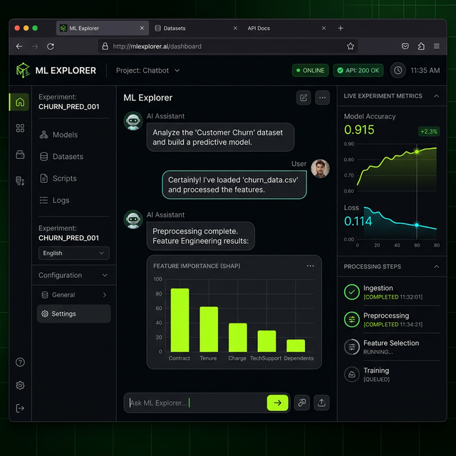

Hi, I'm Jens.
Creative and curious mind, passionate about leading teams, solving hard problems, and driving impact.
Aspiring to roles that sit between strategy and execution and translating vision and business goals into models, metrics, and real workflows. I combine technical literacy with structured problem solving to decide when to trust a model, when to challenge it, and how to embed tools into decisions people actually make.

Projects
Multi-Agent Chatbot System
A complex conversational AI project featuring persistent chat history and community moderation capabilities built in Python. This multi-agent architecture was designed to securely and effectively handle varied user intents while self-moderating.
PythonAI Stock Prediction Application
An end-to-end analytical pipeline predicting stock trends. It leverages machine learning to parse structured financial data and generate actionable insights for algorithmic trading scenarios.
PythonMachine Learning Chatbot
A Jupyter Notebook-driven chatbot experiment that dives deep into applied machine learning techniques. Built to test different approaches to natural language question answering and embedding representations.
Jupyter NotebookEmbedding Benchmarking
A robust benchmarking suite evaluating different text embedding models. Compares the performance, latency, and memory utilization of various open-source models tailored for retrieval-augmented generation (RAG).
Jupyter NotebookInteractive Web Apps

AI Stock Prediction Dashboard
An automated stock prediction tool that doesn't just rely on historical financial data. It dynamically incorporates real-time news and market sentiment to determine its forward-looking forecasts.
Streamlit
Multi-Agent Chatbot Interface
A frontend wrapper for a powerful multi-agent architecture. Allows users to securely interact with specialized AI agents capable of maintaining persistent chat history and community moderation.
StreamlitEmbedding Benchmarking Tool
A visual analytics dashboard for comparing the performance, latency, and memory utilization of various open-source text embedding models tailored for RAG.
Streamlit
ML Chatbot (Mini Project)
An interactive machine learning chatbot built to demonstrate applied natural language processing techniques and custom conversational workflows.
Streamlit